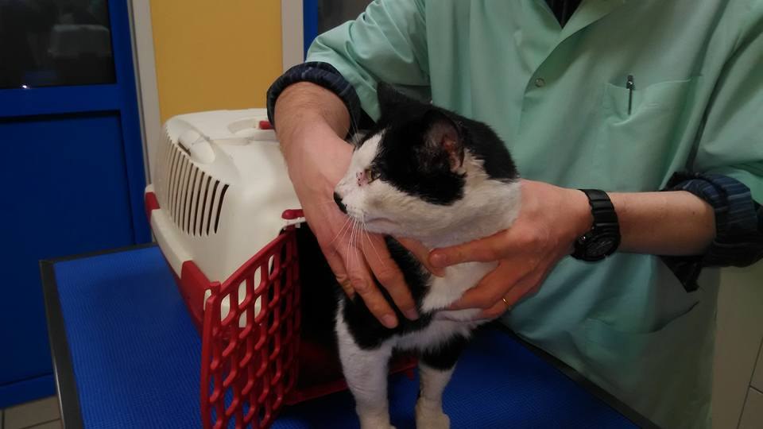
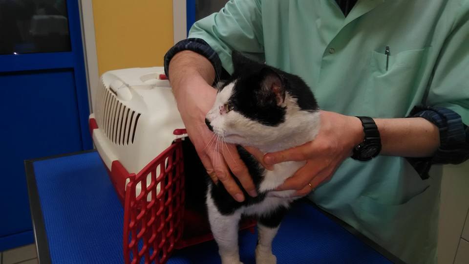
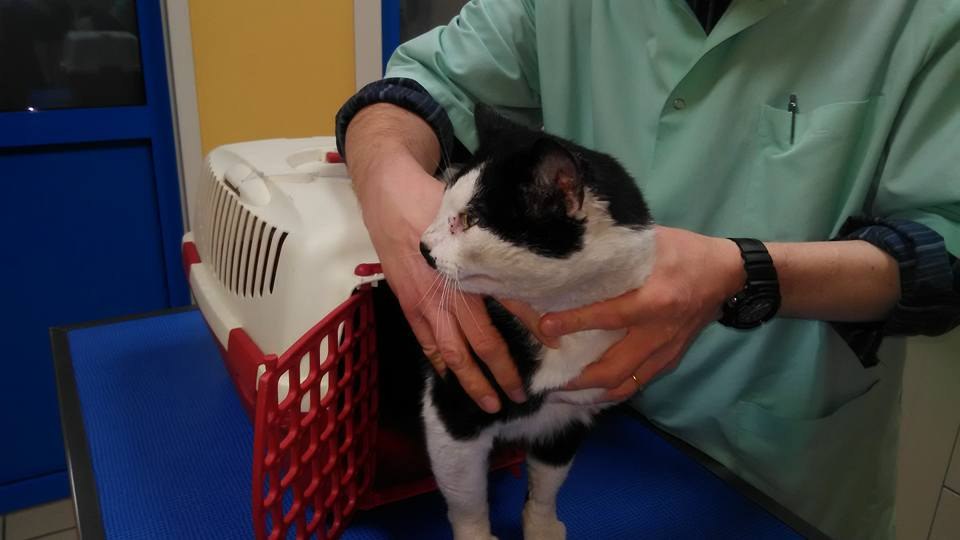

Photos


 

Présidente depuis septembre 2015
En 2003 Michèle emménage dans un quartier sensible ou elle constate des faits de violence sur les animaux. Petit à petit, Michèle recueille des chats maltraités, malades, abandonnés. Les années passant, Michèle croise d’autres femmes comme elle. Ensemble, elles s’organisent et se développent. Mais tout ça a un coût. Alors en 2015, elles décident de constituer une association afin de pouvoir demander des aides, organiser des collectes de croquettes, etc.
Trésorière depuis mars 2018
Bénévole depuis 2015
Membre depuis le début, Marie recueil depuis toujours des chiens et des chats abandonnés. En ayant assez des traitements infliger aux animaux elle décide, avec Michèle et Chantal de tout mettre en œuvre afin de les stérilisés et de les mettre en famille d'accueil.
Secrétaire depuis mars 2018
Bénévole depuis 2015
Depuis des années, Chantal s'occupe de nourrir les chats abandonnés. Certains d'entre eux on réussit a trouvé une famille d'accueil grâce à une association de protection des animaux. Par la suite, elle décida de rejoindre Happy Cats, afin de continuer son combat et venir en aide aux maximum de chats possible.
